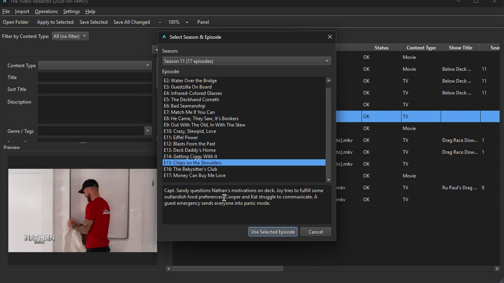

The Ʌideo Redactor
A free bulk metadata editor for MKV and MP4 video files — movies, TV, music videos, and everything else in a mixed library.

What it does
Built for people managing a mixed library of movies, TV episodes, music videos, and oddball clips who want mp3tag-style batch editing instead of clicking into files one at a time.
Features
- Bulk-edit metadata across MP4 and MKV files from one panel: title, description, genre, cast, director, season/episode numbering, and more — with a Content Type filter (Movie / TV / Music Video / Clip / Misc) that shows only the fields relevant to your selection.
- TMDB lookup — search and match a file against The Movie Database, pulling in cast, crew, synopsis, and poster art. Every match in the lookup dialogs is confirmed by hand.
- Season & episode picker for TV — pick the exact episode after matching a show, so per-episode titles and air dates land correctly.
- Subtitle fetching via OpenSubtitles, hash-matched against the exact file first (guaranteed sync), with a title-search fallback clearly flagged as sync-not-guaranteed.
- Remux to MP4 for MKV files — a fast, lossless container swap, not a re-encode, with every track kept and the result verified (details below).
- Convert to MP4/MKV (Rules) (Media menu, on the selected files or on files picked from disk): legacy containers (AVI, WMV, MOV, FLV, MPG, WebM, OGM, 3GP, ASF, DivX, RM and more) become MP4 or MKV by stream copy, with only unplayable video (RealVideo, Flash, odd WMV) re-encoded. A dry run (ticked by default) lists what would happen and changes nothing. The result is verified (tracks, duration, size) before the swap, a failed check keeps the original, and the app’s tags are carried onto the new file. Disc images (ISO, BIN, IMG, VOB) are left alone by default. Convert to MP4 (H.264) remains for a plain re-encode.
- Subtitle ingest: external
.srtfiles beside a video (name.srt,name.en.srt,name - German.srt) are decoded to UTF-8, tagged with their language, ordered, marked SDH where they are, skipped when they duplicate an embedded track, and muxed in (an MP4 becomes an MKV); the ingested files are then removed. - What happens to the original: it goes to the Recycle Bin by default (kept beside the result on a network share or removable drive, where the bin is not available). Optionally a quarantine folder with an undo log takes them instead, or delete after a verified conversion removes them (off by default). Settings are under Tools > Preferences > Library safety and Conversion.
- Encoder Automatic: the re-encodes use hevc_nvenc only when ffmpeg lists it and a short test encode works, and libx265 in software otherwise; GPU decode and scaling is a separate option, off by default. No NVIDIA card is needed.
- Play (Media > Play, Ctrl+Shift+P, a Play button on the toolbar, the right-click menu, and a large Play button under the thumbnail in the side panel): the selected video in its own player window, starting to play at once, with play/pause, seek, volume and pickers for the audio and subtitle track. Select exactly one file; the side-panel button is enabled only then, and only if the file loaded without error. It only reads the file. A Bitrate column sits next to Size.
- Open Folder now says when the folder also holds video in other formats (AVI, WMV, MOV, FLV, MPG, WebM and more) and offers to convert them to MP4/MKV beside the originals, with a “Dry run first” box. File > Include Subfolders (on by default, shared by all four apps) decides whether Open Folder, Refresh List and the offer look in subfolders.
- History (Tools > History…, opt-in, off by default): once you turn it on under Tools > Preferences > History, every tag change the app writes (Save, Redact, the command line’s
set) is recorded with the old and new value, and Restore Old Values writes them back even after the app was closed. It follows a file when it is renamed, moved or converted, keeps no covers, and Delete History sends the file to the Recycle Bin. The on/off setting is part of Export / Import Settings. - Progress for everything slow: Redact runs each file on a worker thread, and the conversions, the read-back of new files, online lookups, renames and exports show a progress dialog with a working Cancel that stops a running ffmpeg within about half a second.
- Rename / Export / Move, previewed before committing. An optional ASCII-safe filenames option turns accented letters and typographic punctuation into plain ASCII (é→e, æ→ae, ß→ss). Renames can be taken back with File > Undo Last Rename, even after a restart.
- Check & repair files — a quick health check (seconds per file, nothing decoded) finds read errors, files that end early from an interrupted download or copy, MKVs without a seek index, MP4s that can't start playing until fully loaded, and default-audio-track mix-ups. Repair rewrites the file losslessly, keeps its tags and cover, checks the result, and sends the original to the Recycle Bin.
- Poster art saved as a sidecar image, the convention Plex/Jellyfin/Kodi already expect, plus a thumbnail preview pulled from a real frame of the video.
Scripting: info, set, rename, move, check and redact also run from the command line: see the command line guide below.
Redact, and everything since
Everything below is in the current release. Redact is the one-click path; the individual tools above remain available.
Redact steps: check and repair (stamped into the file; a file that a lossless remux fully fixes is repaired, a damaged one is only reported), fill empty tags from the filename, fill empty tags from the folder path, and look up metadata (the local IMDb database first when one is set up, then TMDB, TheTVDB as the TV fallback; empty fields only). Optional, off by default: download a missing subtitle (hash match applied, title match reviewed), convert to MP4/MKV and ingest subtitles (the library rules above; the conversion asks its dry run per run), remux MKV to MP4 (verified, not together with the convert step), rename and move into folders. A guess such as a title-only match is listed under Needs review, not applied. Each changed file is rewritten on a scratch copy, verified (tags read back, same streams and duration) and swapped in.
- Redact: one click on the toolbar (or Edit > Redact, Ctrl+Shift+E) runs an editable recipe of steps on the selected files, or on all loaded files after asking. Each changed file is saved in place and its original goes to the Recycle Bin, so the Recycle Bin is the undo. Guesses are applied only at or above a confidence threshold (90% by default); weaker ones are listed under Needs review and never written. Files with unsaved edits or that failed to load are skipped and named in the report. A saved recipe keeps the patterns it was saved with (the editor shows a pattern trail of where each pattern comes from), so changing the Rename / Export pattern later does not silently change what Redact does.
- Move into folders: Rename / Export / Move has a third mode that files each item into a folder tree under a library root, using a pattern with
/in it. The preview shows each new path, nothing is overwritten (a taken name gets “(2)”), and File > Undo Last Rename puts everything back and offers to remove the folders the move created. - Metadata from the folder path: Parse Filename also reads folders. A pattern containing
/is matched against the file name and the folders above it, counted from your library root, with a confidence shown per file. Redact has a matching step that fills only empty fields. - Export / Import Settings (File menu): your recipe, pattern history, column layout and defaults in one JSON file for a new install or a second computer. Import shows every change before applying anything. Passwords, API keys and tokens are never included; tool paths and folders are offered unticked as “this computer only”.
- Command palette (Ctrl+K): type part of any menu command to find and run it. The menus follow one layout in all four apps: File, Edit, View, Metadata, Media, Tools, Help. Open in Default App is in the right-click menu, and Ctrl+Shift+A saves every changed file (Save All).
- Remux you can trust: Remux to MP4 keeps every audio, subtitle and attachment track it can (falling back to fewer streams only where MP4 refuses some), compares the result with the original (tracks and length), and only offers to delete the original when nothing is missing; otherwise the original is kept and you are told why. The original goes to the Recycle Bin, and the work runs in the background with a working Cancel.
- Clearing a field sticks: emptying a value and saving now removes it from the file (MKV and MP4), and save verification checks that cleared fields read back empty. Global MKV tags written by other tools are carried over.
- Find Duplicates (Media > Find Duplicates, review only): groups loaded videos that are probably the same by length and then a 64-bit perceptual hash of one frame, so a re-encode or another resolution still matches. It opens the same review dialog as the other Redactors: each group says how sure the match is and why (“Identical: same file contents”, “Strong match: matching frame hash…”, “Possible match: similar frame hash…”), strongest first. Nothing changes automatically: reveal in folder, open, select in the list, mark a group Not Duplicates (kept by each video’s content fingerprint, so it survives a rename or move), or move to the Recycle Bin after a confirmation that lists the full paths, with one file of each group always kept.
- Preferences (Tools > Preferences…, Ctrl+,): the family’s shared Preferences dialog with four pages — Filenames, Transcode (video quality, audio bitrate, threads), Duplicates (how different two frame fingerprints may be) and Tools / Paths (ffmpeg, MKVToolNix, the IMDb database and its dataset files). OK / Cancel / Apply, and Reset to Defaults for the page you are on. Settings keep their old places, so Export / Import Settings is unaffected; API keys stay in Tools > API Keys.
- Folder scans skip the app’s own leftovers: Open Folder and Refresh no longer list temp files left by an interrupted repair, convert or Redact (only those exact name shapes, so your own files are still listed), and the preview thumbnail cache is pruned and written atomically so a broken thumbnail cannot be shown.
- Check stamp in the file: Check Files records the result and time inside the video (MKV global tag or MP4 freeform atom
REDACTOR_CHECK), written when you Save, with a fingerprint so the Status column can say “(changed since)” after a truncation or re-encode. - API keys for TMDB, TheTVDB and OpenSubtitles are stored in your operating system’s credential store, entered under Tools > API Keys… with the stored value never shown. The environment variables (
TMDB_API_KEYand so on) still take priority. - Open Files and Remove from List: add individual videos with Open Files, and drop files from the list (Delete key) without touching them on disk. Lookups run in the background instead of freezing the window.
- Progress box fix: a “Scanning…” (or similar) progress box could stay on screen for good after its work had finished, when the work took about a third of a second or more. It now closes together with its work.
Design principles
Never write metadata by surprise — in the lookup dialogs, TMDB and subtitle matches always go through a picker. The one exception is Redact, which you start yourself: it applies only matches at or above your confidence threshold (and only to empty fields), lists everything else under Needs review, and sends each original to the Recycle Bin. A file that can't load, save, or match shows a clear error instead of being silently skipped. Metadata reads/writes go through mutagen and mkvpropedit/mkvmerge rather than reimplementing container formats by hand.
Where the metadata comes from
The Ʌideo Redactor works on its own: editing, file checks, remuxing, conversion and duplicate finding need no outside source. Lookups are optional; in the lookup dialogs every match goes through a picker you confirm. Online sources are only asked when you run a lookup. The local database is built from files you download; the app never bundles or downloads them. Redact asks the local IMDb database first when one is set up, then TMDB (TheTVDB as the TV fallback) only for what is still empty, and never overwrites a field that has a value. The hub has all four apps side by side.
Online sources
| Source | What it provides | What you need | Notes |
|---|---|---|---|
| TMDB | Movies and TV: title, release date, synopsis, genre, director, cast and poster art, with a season and episode picker for shows. | Your own TMDB API key. You register for it yourself; it is stored in your operating system’s credential store. | Metadata > Look Up > TMDB (Movie) or TMDB (TV Show). The poster is saved as a sidecar image next to the video. |
| TheTVDB | TV shows: series name, first air date, overview, poster, and season and episode titles, air dates and overviews. | Your own TheTVDB API key, registered for yourself and stored in your credential store. | Metadata > Look Up > TheTVDB (TV Show); also Redact’s TV fallback. |
| OpenSubtitles | Subtitle files, saved next to the video. A hash match on the exact file is tried first (guaranteed in sync); a title search is the fallback and is flagged as not guaranteed to be in sync. | Your own OpenSubtitles API key, registered for yourself and stored in your credential store. | Metadata > Look Up > Subtitles. OpenSubtitles limits downloads; the app reports when the limit is hit. Redact’s subtitle step is off by default. |
Local (offline) sources
| Source | What it provides | What you need | Notes |
|---|---|---|---|
| IMDb datasets | Offline and instant: title, release year (a fuller date you already have is kept), genres, and for a show its title plus the episode’s title, season and episode numbers. A film is also found by an alternative title (for example its Italian or German title). No plot, poster or cast; those still come from TMDB. | You download IMDb’s free dataset files yourself from datasets.imdbws.com (title.basics.tsv.gz is required; title.ratings, title.episode and title.akas are optional) and build the database in Tools > IMDb Database. Cancel is safe. |
For personal, non-commercial use only; see Data and licences. Alternative-title regions include West Germany (ticked by default) and East Germany. Roughly 0.6–1 GB for the full files with the default options, 10–25 minutes and about 1 GB of scratch space while building (estimates from the start of IMDb’s files). Metadata > Look Up > IMDb (Local Database). |
From the file itself
- The filename: Parse Filename reads fields from a pattern, and release names such as
S01E02are understood; an exact pattern match is applied, release-name tags are only a guess. An IMDb id written in the filename ({imdb-tt1234567}ortt1234567) or in the Comment field identifies a title exactly in the local lookup. - The folder path: a pattern such as
%show_title%/Season %season_number%/%title%is matched against the folders above the file, counted from your library root; Redact has a matching step that fills only empty fields.
Licences and required acknowledgements for these sources are collected under Data and licences on the hub.
Information courtesy of IMDb (https://www.imdb.com). Used with permission.
This website uses TMDB and the TMDB APIs but is not endorsed, certified, or otherwise approved by TMDB.
Command line
The Ʌideo Redactor can be driven from a terminal, a batch file or Task Scheduler. It is the same program: there is no second download. videoredactor.exe with a command name as its first argument runs that command and never opens a window; with no arguments, or with a file or folder, it opens the window as before. The commands use the same code as the window, so they give the same results, and not every window function has a command: these are the ones meant for scripting.
| Command | What it does |
|---|---|
info | Show each video's container, resolution, codecs, length, check result and tags. |
set | Set or clear tags (-s show_title=Dune -s season=1); only the tags are written, the video is not re-encoded, and the save is read back and compared. |
rename | Rename from the tags with a pattern such as %show_title% - S%season_number%E%episode_number% - %title%; poster and subtitle files go with the video. |
move | Move or copy into a folder tree under your library root, %show_title%/Season %season_number%/%title%. |
check | Check each file for damage; --repair fixes the ones a lossless remux can, --stamp records the result in the file. |
redact | Run the same Redact recipe as the window: check and repair, tags from the file name and path, TMDB / TheTVDB / IMDb lookups, subtitles, MKV to MP4, rename, move. |
videoredactor info "D:\Series\Dune" --fields title,season,episode
videoredactor set "D:\Series\Dune" -s show_title=Dune -s season=1 -n
videoredactor check "D:\Films" --repair --trash-dir "D:\Trash" --json -o check.json
videoredactor rename "D:\Series\Dune" -p "%show_title% - S%season_number%E%episode_number% - %title%" --zero-pad 2
videoredactor move "D:\Incoming" -p "%show_title%/Season %season_number%/%title%" --root "D:\Library"
videoredactor redact "D:\Incoming" --disable lookup --disable subtitles --trash-dir "D:\Trash"Every command takes videos, folders (searched recursively; -R for the top level only) or wildcards. Every command that changes videos has -n / --dry-run to preview the result first. --json prints one JSON document instead of text, -o FILE writes the result to a file, and -q silences progress. The exit code says how it went: 0 done, 1 some videos failed, 2 bad arguments, 70 an internal error, 130 interrupted.
- Nothing is overwritten: a taken name gets
(2),(3), and a file the pattern gives no name for is skipped, not called “untitled”. A mistyped%token%is refused instead of silently rendering as nothing. - Nothing is deleted for good: an original replaced by Redact or a conversion goes to the Recycle Bin, or to the folder you give with
--trash-dir, for a machine that has none. - No undo: unlike the window, the command line is not recorded in the app's rename log. Preview with
--dry-run. - Your settings apply: the saved Redact recipe, library root, offline databases, and the zero-pad and ASCII choices from the Rename window are what the commands use, unless a flag says otherwise (
--recipe FILE,--root,--zero-pad,--ascii).
check --repair never touches a file that is damaged (a repair would drop its unreadable end); that stays a decision for Media > Check Files in the window. API keys are read from the TMDB_API_KEY, TVDB_API_KEY and OPENSUBTITLES_API_KEY environment variables if set, else from the app's saved ones.
Using it from scripts (Windows)
The Windows program is a windowed one, so an interactive shell does not wait for it. For automation ask for the result in a file, wait for the process, and read the exit code:
videoredactor.exe check "D:\Films" --json --output "%TEMP%\check.json"
if errorlevel 1 echo something failed
start /wait videoredactor.exe redact "D:\Incoming" --quiet
# PowerShell
$p = Start-Process videoredactor.exe -ArgumentList 'redact','D:\Incoming','--json','-o','C:\Temp\redact.json' -Wait -PassThru
$p.ExitCodeIn a batch file write %% for each % of a pattern (-p "%%series%% %%title%%"), as cmd expands a single %name% itself. On Linux the program behaves like any command-line tool. The full reference, with every option and JSON field, is in the repository documentation.
Requirements
Two downloads on each release: a standalone .exe for Windows, and videoredactor-linux-x86_64.tar.gz for 64-bit Linux (Ubuntu 22.04+, Debian 12+, Fedora 36+, Mint 21+ and the like — unpack and run; settings live in ~/.config/videoredactor/). No separate Python install needed on either. Remuxing and thumbnail extraction need ffmpeg; MKV metadata read/write needs MKVToolNix — the app warns on first launch if either is missing from PATH. Full details and the changelog are in the GitHub repository.
The rest of the family
The Ʌideo Redactor shares its UI and core editing patterns with three sibling tools, via redactor_common:
 The ƆBZ Redactor
The ƆBZ Redactor The ƎPUB Redactor
The ƎPUB Redactor The ɯP3 Redactor
The ɯP3 Redactor Dossier
Dossier Pluteus
Pluteus